前言
漏洞描述:Cisco ASA Software处理IKE代码中存在安全漏洞，未经身份验证的远程攻击者发送精心构造的UDP数据包到受影响系统，可造成受影响系统重载或远程执行代码。此漏洞源于受影响代码区域的缓冲区溢出，Cisco官方对该漏洞评级为Critical
该漏洞别评为Pwn Awards 2016,Pwnie for Best Server-Side Bug。本文将对该漏洞进行分析，并介绍利用该漏洞借助堆风水技术实现远程任意代码执行。
IKE协议简介
IKE/IPSec 属于网络层安全协议，保护 IP 及上层的协议安全。从密码学角度看，IKE 用于密钥交换，IPSec 用于保护后续的通信。而保护通信的密钥，就来自 IKE 协议运行的结果。（在 SSL/TLS 协议中，密钥生成和加密保护都是在单独一个协议中完成的，在这一点上，两者各有千秋）
IPSec协议族：
- AH（Authentication Header）：网络认证头部协议，主要用于数据源验证、数据完整性校验和防报文重放功能。
- ESP（Encapsulating Security Payload）：封装安全有效负荷，同样是一个安全协议，与 AH 类似，但是除了 AH 拥有的功能之外还有数据包的加密功能，在 IPSec 中可以使用 AH 或者 ESP 或者两者一起使用。
- IKE（Internet Key Exchange）：密钥管理协议，在加密过程会涉及的共享密钥，公钥，私钥等等，所以需要一个专门管理的协议。 IKE（Internet key exchange）：Internet密钥交换协议，属于混合协议，由Internet安全关联和密钥管理协议（ISAKMP）和两种密钥交换协议OAKLEY与SKEME组成。ISAKMP(Internet Security Association and Key Management Protocol)：网络安全联盟的密钥管理协议，这是 IKE 协议中的一部分，AH 与 ESP 的使用时都需要该协议的支持。
在IKE协议过程中，提供了一个可选的分片功能，IKE分片是将一个较大的数据包分割成多个较小的碎片发送，碎片的详细结构如下图所示：
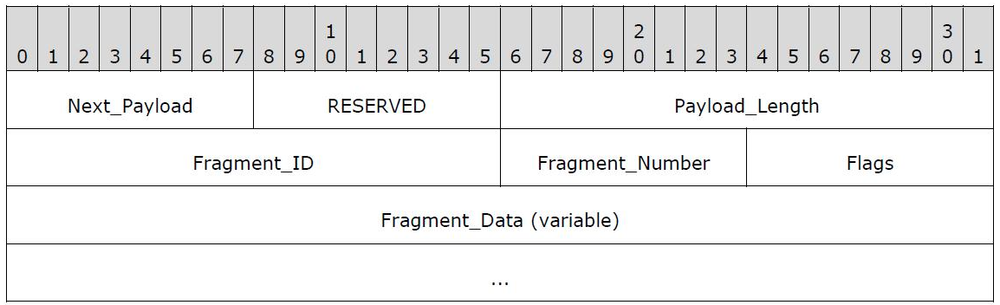
每一个碎片都属于IKE的载荷，其前面必须是IKE报文头，IKE头部中的载荷类型字段应设置为碎片载荷类型值0x84。对于每个碎片头部中Next_Payload和RESERVED字段必须设置为0，同一组碎片Fragment_ID字段必须设为相同的值，Fragment_Number字段自第一个碎片设置为1开始逐个递增，Flags属于结束标识位，只在最后一个碎片中设置。
IKEv2 协议小记
鉴于IKE是IPsec的唯一部分仍未经过身份验证和未加密的，它从安全角度引入了特别的兴趣，因为它构成了IPsec的极少数攻击面之一。
- IKE SA Init
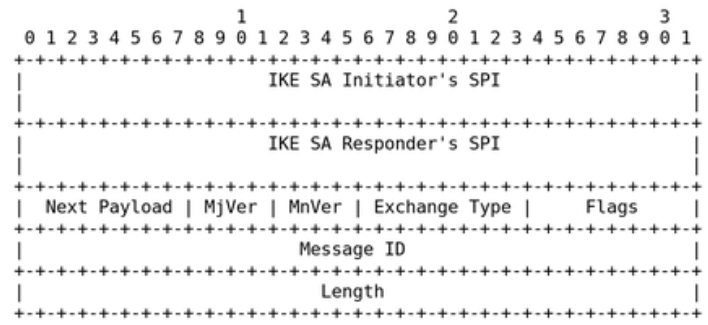
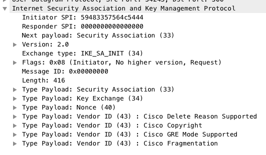
- Cisco IKE fragment header
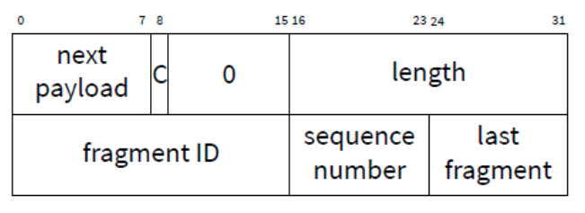

tips:如果为最后一个分片，frag last会被置为1
ASA lina分析
因为lina没有符号表等信息，所以通过调试器或推理猜测对binary逻辑进行分析。
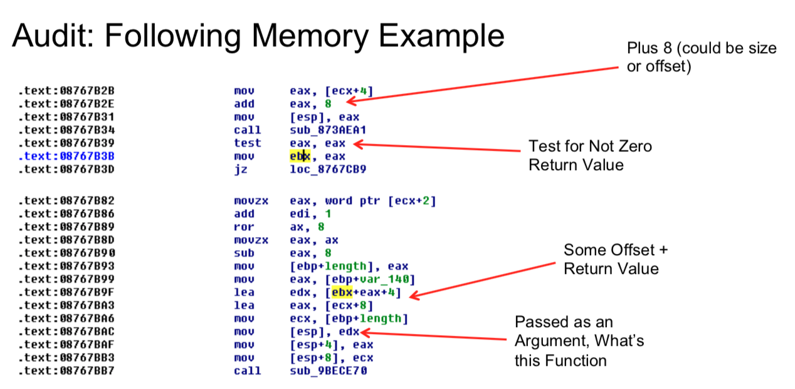
lina处理fragment流程分析
每个fragment均会经过ikev2_add_rcv_frag()和ikev2_reassemble_pkt()两个函数处理，ikev2_add_rcv_frag()负责解析fragment并维护重组队列，ikev2_reassemble_pkt()检查队列和重组，当所有fragment即last fragment字段被设置的帧的sequence number和队列里帧的数量相同，ikev2_reassemble_pkt()才会进行重组。
fragment的size和sequence字段必须为合法值
同一fradment id在同一个queue，同一队列的所有帧大小相同，除了最后一个帧
避免 Negative Copy
1.收到不同于之前fragment id的帧，之前的帧队列将被清空，但size仍保留在
2.seq 0的数据不会被重组，因为从1开始重组，但长度会被计算到总长度
3.多个带last fragment bit会被添加到重组队列
4.有gap的序号不会被重组，但长度会被计算到总长度，如 1，2，4则4不会被重组
发送如下fragment
- Fragment with ID Y, last fragment bit not set, and size N is sent to set the previous size even though this fragment will be cleared from the queue
- Fragment with ID Z, sequence number 0, size 1, and last fragment bit set is sent to clear previous fragment
- Fragment with ID Z, sequence number 3, size 1, and last fragment bit set
- Fragment with ID Z, sequence number 1, size N, and the last fragment bit clear is sent
0和3不会被重组，但两个-7的长度会被加到queue长度总和中，1是唯一一个会被重组的fragment。第一个id Y帧的目的是使之前的queue清空，且把size N留给seq 1使用。
mempool headers
1 | struct mp_header { |
漏洞分析
漏洞发生在ASA系统出了IKE密钥交换的代码中，漏洞是由于缓冲区边界检测不严而造成了堆溢出。
当接收到IKE碎片报文，将会触发两个关键的函数， ikev2_add_rcv_frag()和ikev2_reassemble_pkt()。其中第一个函数作用是把接收到每一个碎片添加到重组队列中，第二个函数在所有碎片接收完成后将其重组为一个完整的报文。

在新收到一个新的碎片后，ikev2_add_rcv_frag()函数都会重新计算重组后的报文长度。下列摘选了ikev2_add_rcv_frag()函数的相关代码片段：
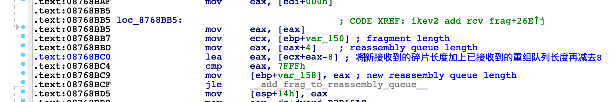
当所有的碎片接收完成后，ikev2_reassemble_pkt()函数将会在内存中申请一块连续的空间存放重组后的报文，相关代码如下：
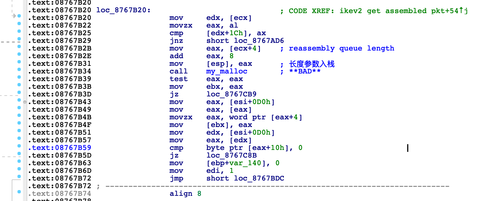
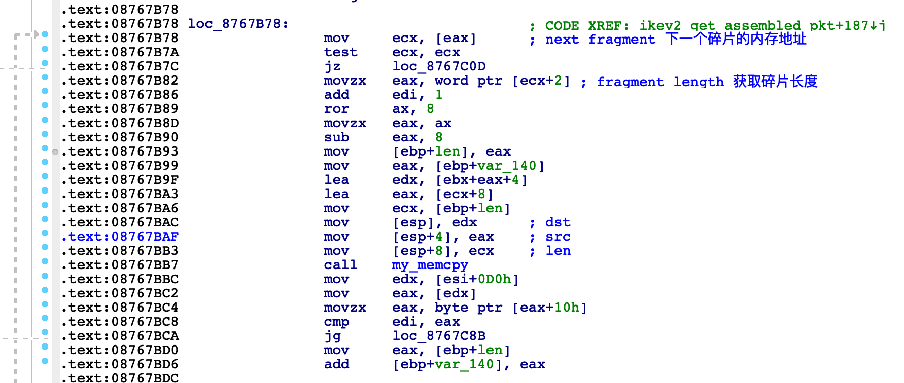
在ikev2_add_rcv_frag()函数中存在着逻辑问题，对于每一个接收到的碎片，虽然代码检查了长度的最大值，但却没有检查最小值，并且在每接收到一个碎片后，都会减去它的头部长度8字节，若攻击者构造一组分片包，但其中一个碎片不包含数据段，并将Payload_Length字段设置为小于头部长度的8字节的值，那么存在漏洞的设备在接收到这组分片后，会错误的计算重组队列长度，使得重组队列的长度小于实际接收碎片的总长度，那么在ikev2_reassemble_pkt()函数的内存复制阶段就会发生堆溢出错误。
漏洞利用
如下session2 发送的payload只有seqno 1能被正常重组,利用seqno 1的内容去溢出相邻chunk head的size值
1 | n = 0xd6 |
重组时malloc的长度为 0xe1 - 0x7 - 0x7 = 0xd3(0xe1 = 0xd9 + 8)
我们在0x08767b31处下断点
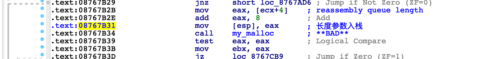
确认malloc长度为0xd3
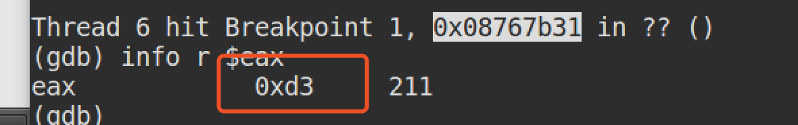
实际payload长度为0xe1,所以我们可以溢出14个字节
在0x08767b39处下断点
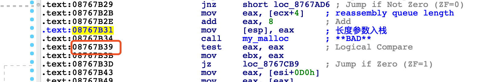
溢出前的chunk状态
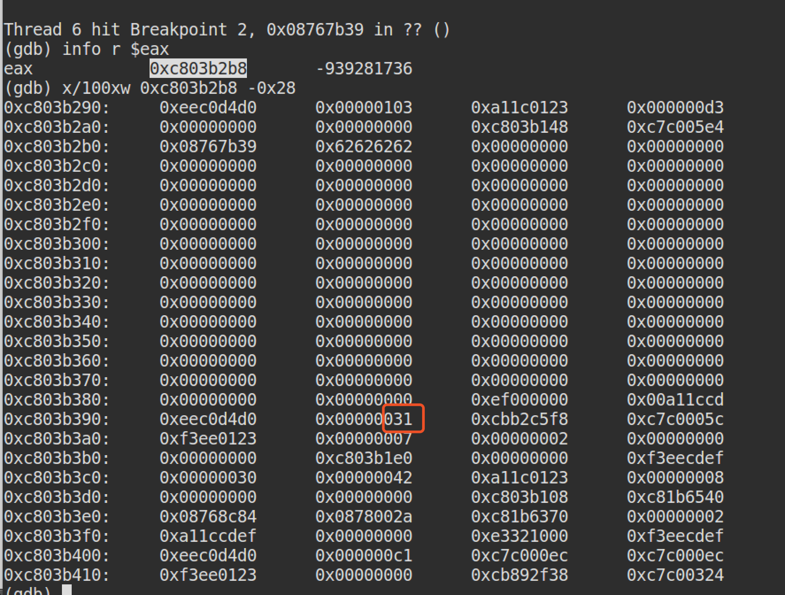
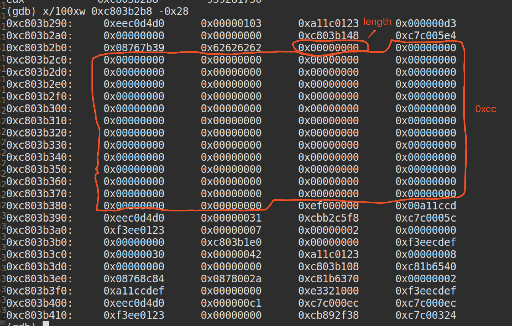
溢出后，实际应该copy 0xd9 - 14 = 0xcb 大小的数据
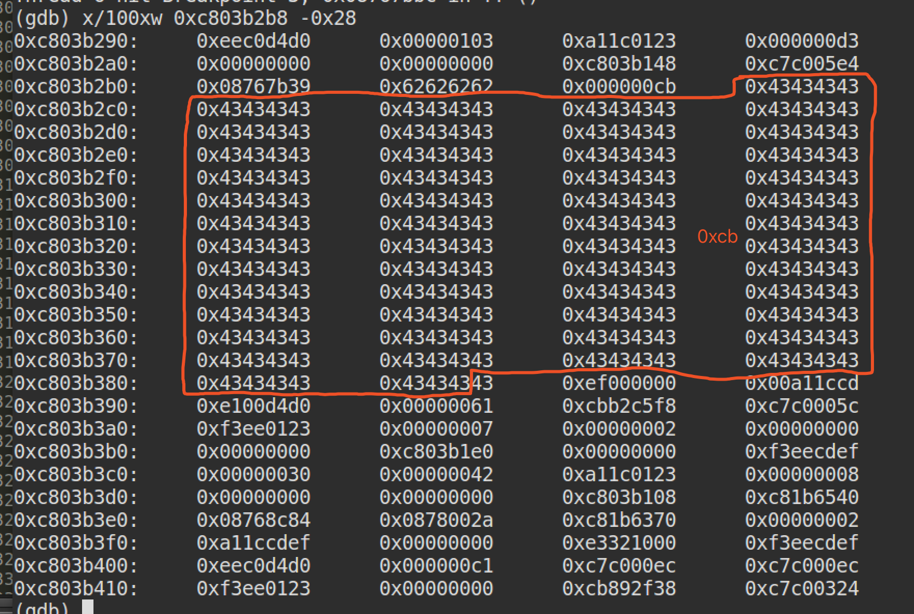
由于可以溢出14个字节,刚好可以覆盖相邻free chunk的size字段，及由0x31 - > 0x61
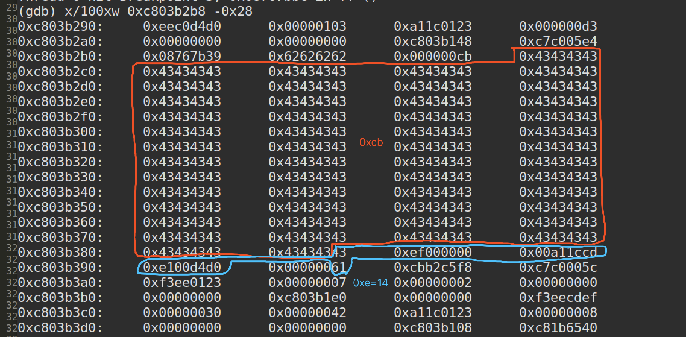
这样如果能提前布置好堆的布局，就可以将一个较小的free chunk覆盖为一个较大的free chunk，这样我们就可以控制被覆盖free chunk后边的chunk的meta data，即达到如下的效果
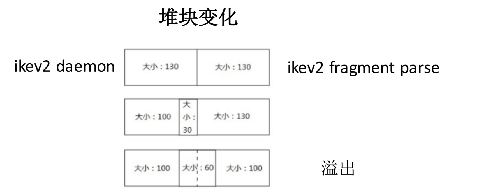
堆风水
为了实现将堆变为我们可预测的样子，接下来利用ikev2_parse_config_payload()函数进行堆风水。
IKEv2 config payload packet各字段如下：
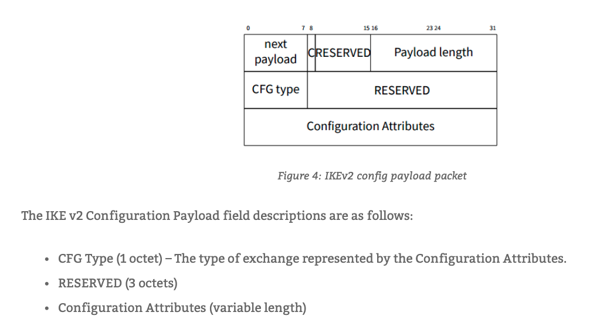
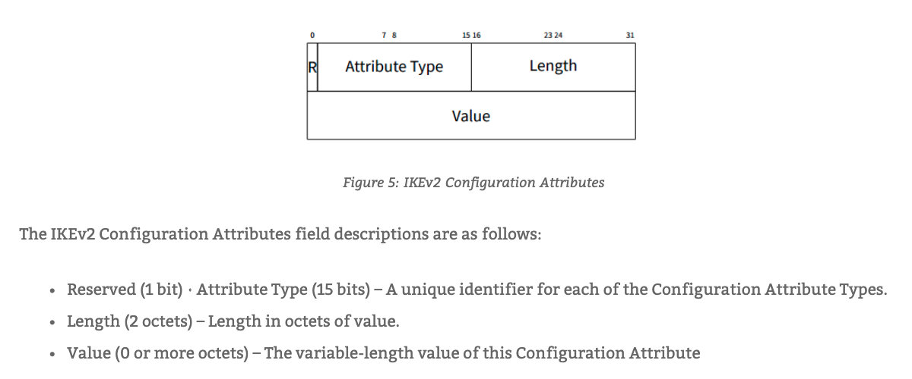
利用堆风水最终可以实现如下布局
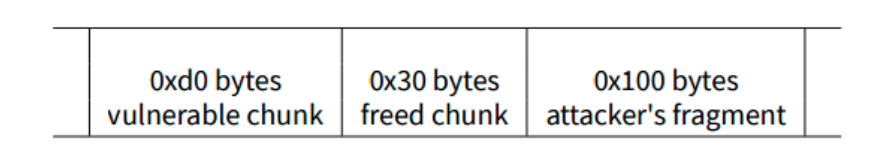
发送大量config包的目的是使接下来分配的packet能够连续地挨在一起，即把一些分散混乱的hole填充掉，如下是发送大量config包之后heap的状态,没有0x100左右大小的hole了，如再申请0x100左右大小的包，可能分割新的top chunk，即在连续的地方分配
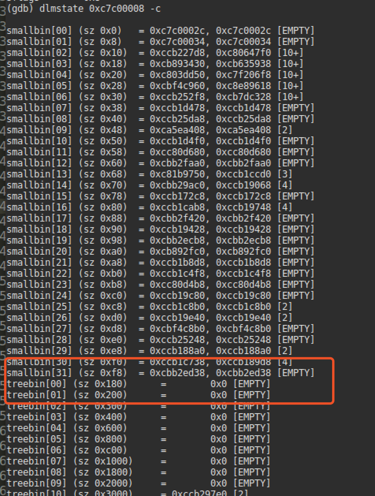
发送大量config包之后，发送了如下0x100的包
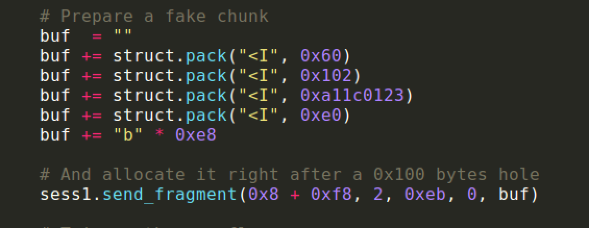
此处注意，不论发送多大的包， 每次IKEv2守护程序收到数据包时，都会malloc 0x100字节来处理数据包数据，如果数据大于0x100则释放掉再申请更大的chunk。
此时堆布局如下
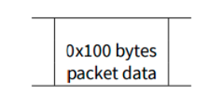
然后通过add_recv_frag，刚刚发送的包（即攻击者可控的包）会排布在该chunk之后，如下图
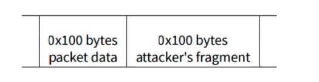
之后第一次申请的0x100的chunk会被释放掉，这样在攻击者可控
之后第一次申请的0x100的chunk会被释放掉，这样在攻击者可控的chunk之前就留下了一个hole。
之后发送如下payload

首先IKEv2守护程序收到数据包时，仍会malloc 0x100字节来处理数据包数据，但该包有效大小大于0x100，于是free掉该chunk，malloc一个更大的chunk，如下所示
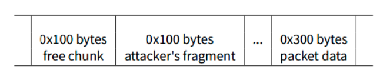
这样0x100的hole又空出来了
ikev2_get_assembled_pkt()函数将分配0xd3大小的块，返回0xd0,（额外的3字节放在footer空着的地方）。由于之前通过config包，将堆中的碎片都去掉了，所有会切割这个0x100的hole，拆分为0xd0和0x30,如下所示
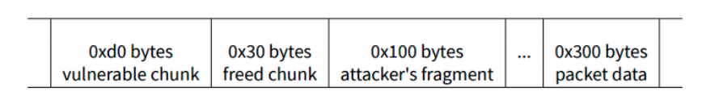
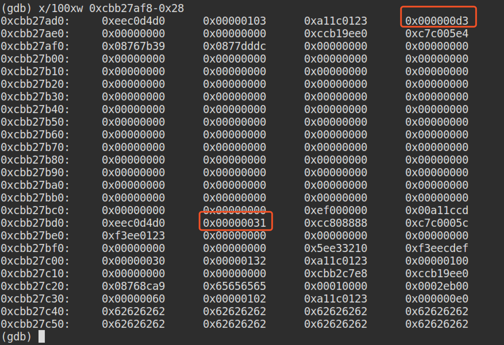
接着会溢出到0x31 chunk的头部，如下
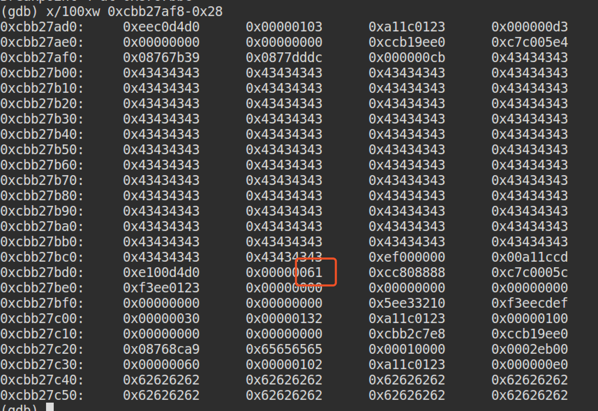
由于0x31被覆盖成了0x61，刚好包含了相邻的攻击者可以控制chunk的header，于是我们可以在攻击者可控的data部分伪造一个fake chunk header
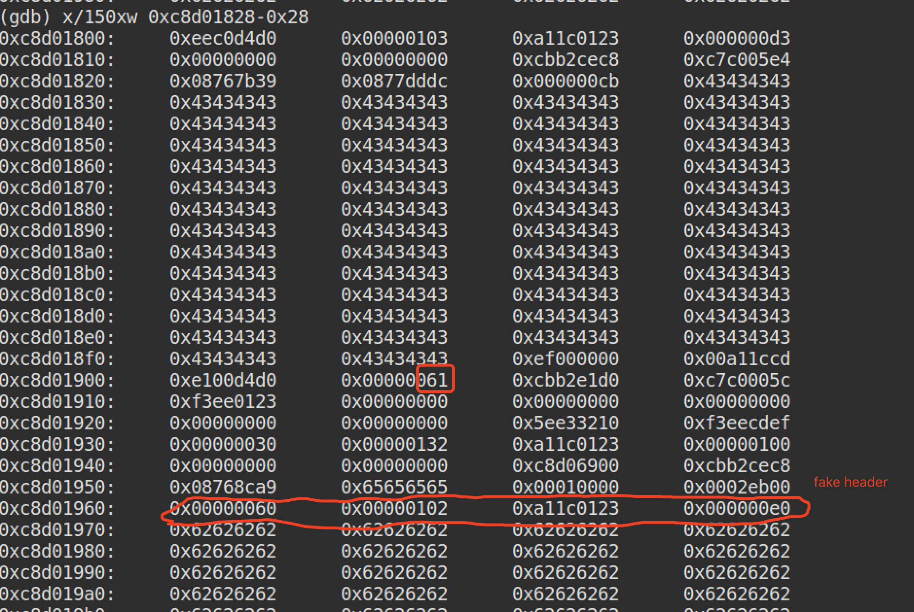
ikev2_get_assembled_pkt()函数由于收到了 seqno 为3 且为last frag的fragment，但未收到 seqno 2，则会退出循环复制，并且free掉之前的0xd0 chunk，该chunk会前后寻找相邻的free chunk进行合并。此时会和刚刚伪造的0x60进行合并,合并为0x130的free chunk，这样我们便可以重新申请回该free chunk，并覆写其中的多个指针。
劫持控制流
因为没有safe unlink机制，所有可以利用write4 primitive 劫持控制流。
接下来发送多个0x130的config 包来重新malloc该chunk，进而覆盖多个个指针。之后再出利用在释放堆块的时候触发2次write 4，第一次是130h这个堆块被释放，因为这个堆块开始的时候存放的就是一个分片的数据，之后堆块头被改后，一直没有被释放，直到重新构造出头部后，再次收到新的攻击数据包后，最终释放，第二次是30h和130h合并是产生的，劫持ikev2_add_rcv_frag（）中使用的函数指针到一个固定的地址(即0xc8002000)，跳转到最后一个数据包中的shellcode。
tips:
1 | 之所以要找一个可读可写的地址，是因为write4 需要的两个地址均是可读可写，这就意味着不能利用text段的gadget。 |
分别覆盖0x30 free chunk中的freed fd、bk 和 0x100中的 allocated fd 与 bk。具体如下：
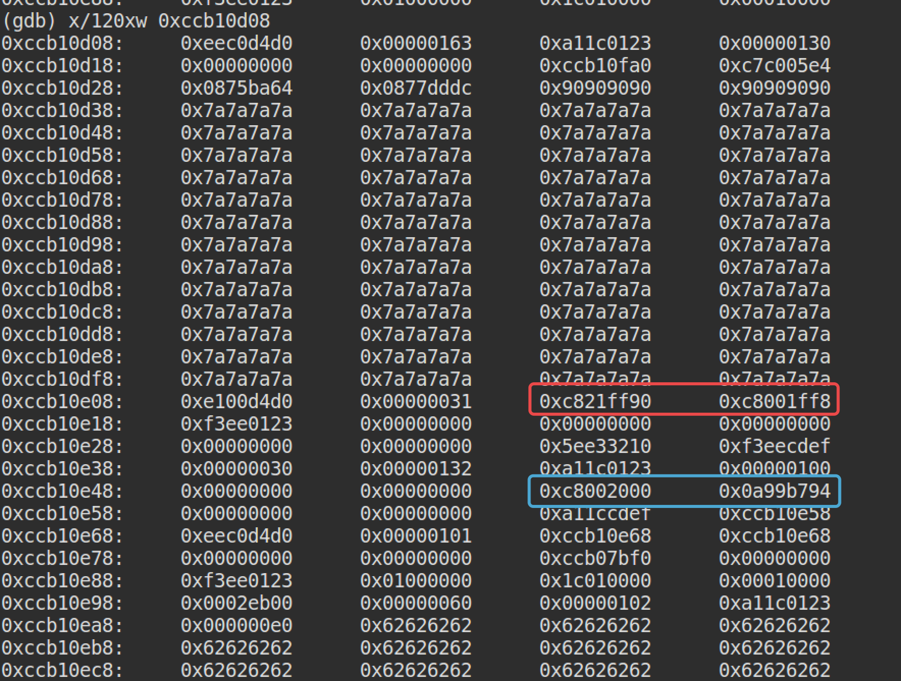
触发顺序为先触发蓝色，后触发红色。
首先将list_add的函数指针(即ikev2_add_rcv_frag（）中使用的函数指针)改为一个可读可写的内存地址(即0xc8002000)
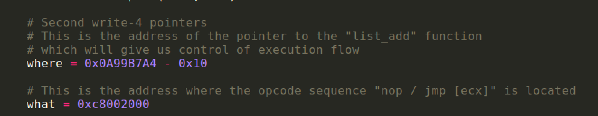
之所以where处减0x10，原因看allocated chunk的结构(即前文所述mempool的header)
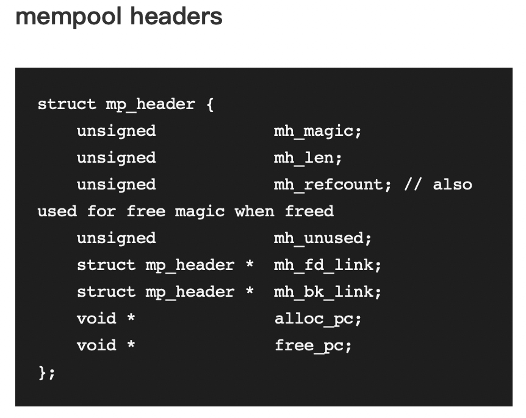
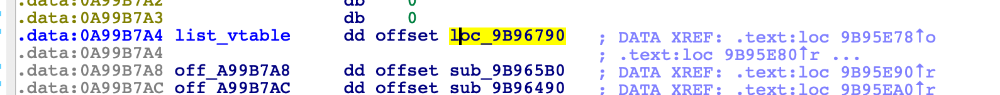
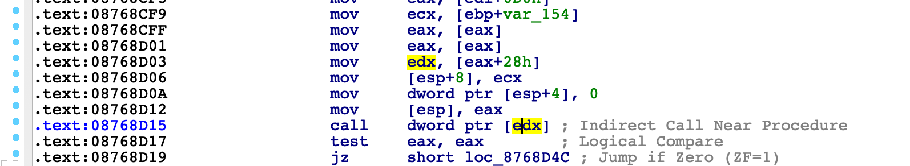
然后在可读可写的内存地址(即0xc8002000)写入0xc821ff90，反汇编为如下内容
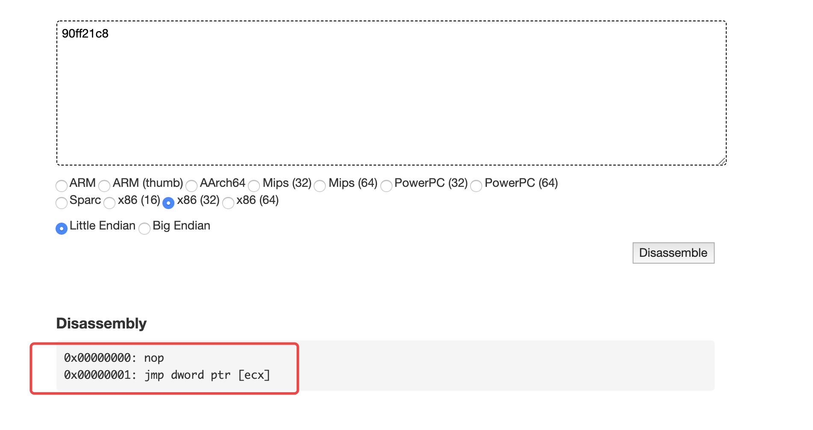
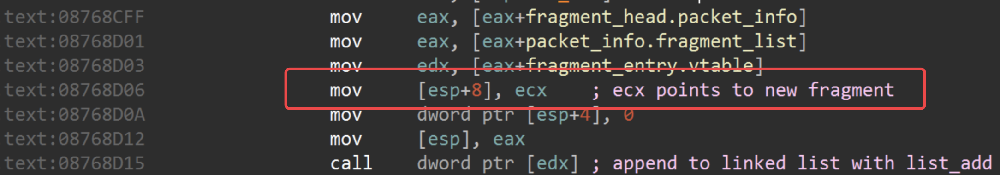
因为ECX寄存器保存一个指向新收到包的data部分，所以 jmp dword ptr [ecx]，可以将控制流劫持到我们的shellcode上。
触发时机
第一次是130h这个堆块被释放，因为这个堆块开始的时候存放的就是一个分片的数据，之后堆块头被修后，一直没有被释放，直到重新构造出头部后，发送一个不同于之前size的frag，该chunk即可被释放，释放前首先从allocated bin上解链下来，即触发第一个write 4,将list_add的函数指针(即ikev2_add_rcv_frag（）中使用的函数指针)改为一个可读可写的内存地址(即0xc8002000)。0x130这个变为free chunk后，会和相邻的0x30 free chunk进行合并，此时触发第二次 write4,在可读可写的内存地址(即0xc8002000)写入0xc821ff90(jmp dword ptr [ecx])。
后续清理
因为检测到heap crash后，cisco设备会重启。所以劫持控制流后的shellcode分别修复list_add的指针和corrupted chunk。
清理后利用一个反向shell的shellcode来接管设备。